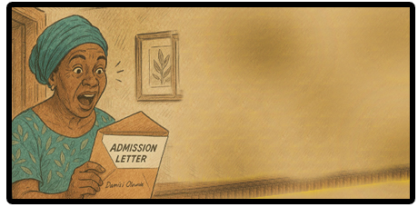

Sometimes, the future knocks quietly other times, it shouts your name through the voice of a mother who’s held on through grief and grace. For Damisi and her daughter Dami, this letter wasn’t just about admission—it was about affirmation. It was proof that dreams can still bloom even in the soil of sorrow. And today, that dream arrives, wrapped in an envelope and sealed with hope.

Dami!! I just received your admission letter—check the mail!” Mom’s voice sliced through the house like lightning in a storm.
I nearly tripped over the rug as I bolted down the staircase. “Mom, you said what !!!” I shouted .
She stood in the hallway, eyes glistening with pride and envelope in hand. “I said I received your admission letter, aunty !” she said, shaking the envelope with a grin wider than the sky